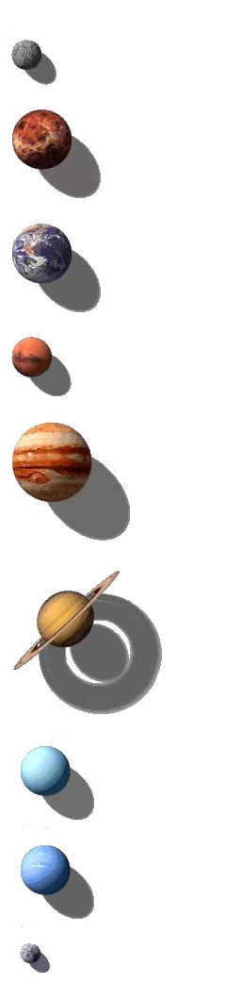

Dacă astronomii studiază corpurile cerești, poziția lor, din ce
sunt compuse sau cum se mișcă, astrologii sunt mai degrabă influențați
de modul în care poziția planetelor ne influențează pe noi, oamenii.
În studiul astrogramei folosim sistemul geocentric, în care Pământul
este în centru, fiind receptorul configuraţiilor celeste. Orientarea
locală a Cerului, determină locul de recepţionare şi influenţare.
Este vorba de un cer la naştere; copilul cu bagajul său spiritual,
ereditar, mediul familial, geografic, social determinând condiţiile
recepţionarii. Aceste condiţii, nu sunt niciodată aceleaşi pentru toţi.
Cerul este împărțit în 12 sectoare egale de 30 de grade care se
numesc Casele Cerului, și care nu sunt decât cele 12 zodii.
În rază fiecărei contelatii zodiacale se pot află planetele,
arătându-ne cum se manifestă acestea.
Impropriu numite toate planete, fieacare din corpurile cerești
stabile şi principale ale Sistemului Solar pe care se bazează
astrologia natală reprezintă un ce – categoria mai restrânsă de
atribute care ne caracterizează viață.
Cerc=simbolul perfeciunii, spiritul
Semicerc=suflet
Linie verticală=rațiunea
Linie orizontală=corpul
Crucea=rațiune și corp, materia
Luminariile (lumina lor afectează mai direct viață pe Pământ) sunt cele care au influență cea mai puternică asupra vieții individuale și generale, fie ea biologică, psihică sau spirituală:
Soarele
Frecvența de schimbare a zodiei: o dată pe lună
Soarele este cel care reprezintă personalitatea.
Zodia în care se află soarele în momentul nașterii este zodia nostră
deja cunscuta. În funcție de zodia în care se află soarele,
vom avea anumite caracteristici. Casă în care se află soarele
în astrogramă natală arată domeniul în care vom excela sau care ne
interesează foarte mult (țeluri în viață), domeniul în care vom da tot
ce este mai bun din noi.
Luna
Frecvența de schimbare a zodiei: o dată la două zile și jumătate
Luna reprezintă sentimentele, rectile afective, instinctul.
Zodia în care se află luna arată modul în care rectionam la ceea
ce este în jurul nostru dar și subconștientul, personalitatea nostră internă.
Casă în care se află luna în astrograma natală indică domeniul care este cel
mai important pentru noi pentru a ne simți bine pe plan afectiv,
dar și domeniul în care ne putem baza pe instinctul nostru, fără a greși.

Planete interioare sau rapide cu influențe la nivel individual, afectând omul în mod direct:
Mercur
Frecvența de schimbare a zodiei: o dată la 3-4 săptămâni
Mercurul simbolizează comunicarea și rațiunea.
Zodia în care se află mercur indică modul în care comunicăm și în care
procesăm informațiile, modul de gândire. Casă în care este poziționat ne
arată domeniile care preocupă, cele ne intrigă intelectual și la ce ne
gândim cel mai mult.
Venus
Frecvența de schimbare a zodiei: o dată la 4-5 săptămâni
Venus reprezintă tot ce este legat de iubire, viață amoroasă,
frumusețe și artă. Poziția într-o anumită zodie indică felul în care
reacționăm în relațîi, latura afectivă și legătură noastră cu esteticul.
Casa unde se poziționează în astrograma natală indică domeniile care
îi vor aduce fericire persoanei, și locul unde va găsi împlinirea sentimentală.
Marte
Frecvența de schimbare a zodiei: o dată la 6-7 săptămâni
Marte semnifică acțiune, dinamism, ambiție, dorința, dar și agrezivitate.
Poziționarea în astrogramă natală ne arată modul în care acționăm ,
în care preluăm intiatava, și atitudinea nostră în momentele stresante.
Locul pe care îl ocupă în case reprezintă domeniul în care avem
imbold și ne ascultăm instinctul, uneori fără să ne gândim la riscuri.
Planete exterioare sau lente- cu influențe la nivel relațional (om față de om):
Jupiter
Frecvența de schimbare a zodiei: o dată la 12-13 săptămâni
Jupiter indică depășire constrângerilor și a limitelor, expansiune,
dezvoltare,optimism și abundență. Zodia în care se află ne arată în ce
mod vom încerca să ne depășim condiția, în ce fel încercăm să ne dezvoltăm.
Poziția în casele astrologice indică domeniul în care putem profită cel mai
ușor de viață, în care vom obține cel mai ușor rezultate bune.
Saturn
Frecvența de schimbare a zodiei: o dată la 2,8 ani
Saturn reprezintă limitarea, constrângerile, structurile rigide și pesimismul.
Zodia în care se află saturn ne indică pe ce planuri există anumite temeri și rețineri dar
și
modul în care încercăm să ne depășim slăbiciunile.
Casa reprezintă domenii ale vieții în care trebuie să facem puțînă ordine,
în ce domenii pot apărea probleme sau piedici.
Planete transparente cu o influență asupra unor generații:
Uranus
Frecvența de schimbare a zodiei: o dată la 7 ani
Uranus reprezintă deschiderea spre nou, schimbare, revoluție, răzvrătire.
Zodia stabilește modul în care vom încerca să ne impunem că persoane, modul în care ne
vom răzvrăti împotriva unei structuri rigide. Casă este domeniul în care ne putem aștepta
la surprize și la evenimente neprevăzute.
Neptun
Frecvența de schimbare a zodiei: o dată la 10-12 ani
Neptul simbolizează fantezia și visarea, intuiția dar și
iluziile
Poziția zodiacală arată modul în care se percepe realitatea și legătură dintre societate
și real/ireal.Casă în care este poziționat neptun reprezintă domeniile în care ne
putem baza pe intutie, spre care visam, dar și cele în care pot să apară dezamăgiri
Pluto
Frecvența de schimbare a zodiei: o dată la 12-15 ani.
Pluto reprezintă renașterea, regenerare, transformarea, obsesii și lupta pentru
putere
Zodia acesteia indică în ce mod abordăm transformările care au loc în noi și în viață
noastră și
ce obsesii ne caracterizează generația
Poziționarea într-o casă arată domeniul unde e cel mai posibil să apară transformări
remarcabile.